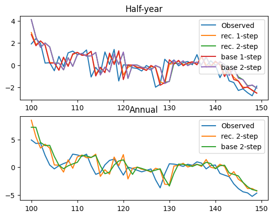
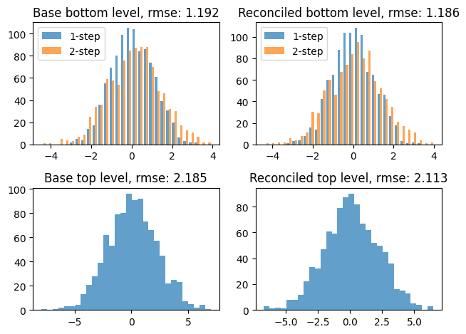

Hierarchy example
This notebook provides a toy example for hierarchical reconciliation in a temporal hierarchy. It demonstrates the use of the TemporalRidgeReconciliation class for use with temporal hierarchies and RidgeReconciliation for general hierarchies.
First, import dependencies and the dataset
[1]:
from py_online_forecast.hierarchies import *
import py_online_forecast.core as c
import matplotlib.pyplot as plt
import pandas as pd
import numpy as np
from py_online_forecast.datasets import sample_hierarchical_data as data
The data is a pandas dataframe, containing observations and predictions for the hierarchy,
For convenience, both the bottom level observations Y_{H,s} and the aggregated values Y_{A,s} are included. The data is structured using a pandas multiindex so that the i’th row has observations, \(Y_{A,i}\), \(Y_{H,i}\) and predictions \(\hat{Y}_{A,i+2}\) and \(\hat{Y}_{H,i+1}\), \(\hat{Y}_{H,i+2}\).
[2]:
data.head()
[2]:
| Variable | Y_A | Y_H | pred_Y_A | pred_Y_H | |
|---|---|---|---|---|---|
| Horizon | 0 | 0 | 2 | 1 | 2 |
| 0 | 0.564940 | 0.056956 | 0.514225 | 0.052061 | 0.047586 |
| 1 | -1.309807 | -1.366763 | -1.192225 | -1.249289 | -1.141912 |
| 2 | -3.251866 | -1.885103 | -2.959944 | -1.723078 | -1.574979 |
| 3 | -4.437113 | -2.552010 | -4.038790 | -2.332664 | -2.132171 |
| 4 | -4.234289 | -1.682279 | -3.854174 | -1.537687 | -1.405522 |
To perform forecast reconciliation, we will use the purpose made TemporalRidgeReconciliation class. To use it, we first need to encode the structure of the hierarchy. We do so using the top level summation matrix,
[3]:
S = np.array([[1,1],[1,0],[0,1]])
S_top = S[[0]]
And a “backshift” operator, indicating how the bottom level observations, should be lagged to form the bottom level of the hierarchy. In this case, we assume we are given \(Y_{H,s}\) and thus need to form the vector \((Y_{H,s-1}, Y_{H,s})\). The backshift operator is then specified as,
[4]:
B = [1, 0] # [Y_{H,t-1}, Y_{H,t-0}]
We can then construct the reconciliation model as,
[5]:
temporal_reconciler = TemporalRidgeReconciliation(
S_top, # Top level summation matrix
B, # Backshifts for bottom level in temporal hierarchy
full_cov=True, # Argument passed to `RRR` for estimating covariance or just variances
skip_duplicates=True, # Whether to skip duplicate data updates
opt_shrink=False, # Whether to use SRRR or RRR for estimation
full_hierarchy_cov=False, # Whether to reconstruct the full hierarchy covariance matrix or just the variances
)
Note: by default, the reconciliation horizon is assumed to be \(\max(B) + 1\). This can be changed by explicitly setting the
horizonargument.
To ensure the output matches the input format (i.e. the ForecastFormat), we need to specify a formatter for the reconciler. If we do not specify a formatter, the reconciler will not track the sources of the data and the output will be a numpy array
[6]:
from py_online_forecast.forecast_tools import ForecastFormat
temporal_reconciler.set_format(ForecastFormat)
We then extract data for reconciliation and fit the model,
[7]:
# Extract data
Y_hat = data[["pred_Y_A","pred_Y_H"]]
Y_bot = data[["Y_H"]]
# Fit the model
res = temporal_reconciler.fit(Y_bot = Y_bot, Y_hat = Y_hat)
The result is a dict with “mean” and “cov” as keys and pandas dataframes as values,
[11]:
res["mean"].head()
[11]:
| Variable | pred_Y_A | pred_Y_H | |
|---|---|---|---|
| Horizon | 2 | 1 | 2 |
| 0 | NaN | NaN | NaN |
| 1 | NaN | NaN | NaN |
| 2 | NaN | NaN | NaN |
| 3 | -5.191829 | -2.558594 | -2.633235 |
| 4 | -1.388755 | -1.054605 | -0.334151 |
[17]:
res["cov"].head(9)
[17]:
| Variable | pred_Y_A | pred_Y_H | |
|---|---|---|---|
| Horizon | 2 | 1 | 2 |
| 0 | NaN | NaN | NaN |
| 1 | NaN | NaN | NaN |
| 2 | NaN | NaN | NaN |
| 3 | NaN | NaN | NaN |
| 4 | NaN | NaN | NaN |
| 5 | NaN | NaN | NaN |
| 6 | NaN | NaN | NaN |
| 7 | 0.143827 | 0.026645 | 0.046661 |
| 8 | 0.255483 | 0.047330 | 0.082886 |
We can also perform the updates incrementally to emulate an online setting,
[ ]:
# First, reset the state of the reconciler (i.e. clear data and paramter estimates)
temporal_reconciler.reset_state()
# Then, loop over rows in the data and update the reconciler one step at a time
mean = []
cov = []
for t in range(len(Y_bot)):
Y_bot_t = Y_bot.iloc[[t]]
Y_hat_t = Y_hat.iloc[[t]]
rec_t = temporal_reconciler.update(Y_bot = Y_bot_t, Y_hat = Y_hat_t)
mean.append(rec_t["mean"])
cov.append(rec_t["cov"])
mean = pd.concat(mean)
cov = pd.concat(cov)
[19]:
mean.head()
[19]:
| Variable | pred_Y_A | pred_Y_H | |
|---|---|---|---|
| Horizon | 2 | 1 | 2 |
| 0 | NaN | NaN | NaN |
| 1 | NaN | NaN | NaN |
| 2 | NaN | NaN | NaN |
| 3 | -5.191829 | -2.558594 | -2.633235 |
| 4 | -1.388755 | -1.054605 | -0.334151 |
[20]:
cov.head(9)
[20]:
| Variable | pred_Y_A | pred_Y_H | |
|---|---|---|---|
| Horizon | 2 | 1 | 2 |
| 0 | NaN | NaN | NaN |
| 1 | NaN | NaN | NaN |
| 2 | NaN | NaN | NaN |
| 3 | NaN | NaN | NaN |
| 4 | NaN | NaN | NaN |
| 5 | NaN | NaN | NaN |
| 6 | NaN | NaN | NaN |
| 7 | 0.143827 | 0.026645 | 0.046661 |
| 8 | 0.255483 | 0.047330 | 0.082886 |
Behind the scenes TemporalRidgeReconciliation is a lightweight wrapper around RidgeReconciliation, that normalizes inputs to conform to a general hierarchy. To illustrate the use of the latter class, we can do the normalization manually,
[32]:
# Create bottom level of hierarchy using the BackShift class
Y_bot_full = p.BackShift(B, skip_duplicates=True)(Y_bot)
Y_bot_full
[32]:
array([[ nan, nan],
[ 0.05695592, -1.3667628 ],
[ nan, nan],
...,
[-1.18745718, -0.9006303 ],
[ nan, nan],
[-0.6741683 , -1.13386409]])
Then construct and fit the reconciliation model
[33]:
reconciler = RidgeReconciliation(
S_top, horizon=2, opt_shrink=False)
reconciler.set_format(ForecastFormat)
res = reconciler.fit(Y_bot = Y_bot_full, Y_hat = Y_hat)
[34]:
res["mean"].head()
[34]:
| Variable | pred_Y_A | pred_Y_H | |
|---|---|---|---|
| Horizon | 2 | 1 | 2 |
| 0 | NaN | NaN | NaN |
| 1 | NaN | NaN | NaN |
| 2 | NaN | NaN | NaN |
| 3 | -5.191829 | -2.558594 | -2.633235 |
| 4 | -1.388755 | -1.054605 | -0.334151 |
Note, either of the reconciliation classes can use Source instances as inputs. In fact TemporalRidgeReconciliation is more or less implemented as,
[40]:
# Construct sources for inputs
Z_bot = c.Source("Z_bot")
Y_pred = c.Source("Y_pred")
# Backshift observations
Y_bot_full = p.BackShift(B, skip_duplicates=True, data = Z_bot)
# Construct reconciler
reconciler = RidgeReconciliation(
S_top, horizon=2, opt_shrink=False, Y_bot = Y_bot_full, Y_hat = Y_pred
)
# Apply formatting
reconciler.set_format(ForecastFormat)
# Call using the generic transform interface
res = reconciler({Z_bot: Y_bot, Y_pred: Y_hat})
We can plot the forecasts,
[44]:
Y_hat_rec = res["mean"]
Y_top = data[["Y_A"]]
n_start = 100
n_plot = 50
fig, (ax1, ax2) = plt.subplots(2, 1)
ax1.set_title("Half-year")
Y_bot.iloc[n_start:n_start + n_plot].plot(ax=ax1)
Y_hat_rec[["pred_Y_H"]].fc.lag().iloc[n_start:n_start + n_plot].plot(ax=ax1)
Y_hat[["pred_Y_H"]].fc.lag().iloc[n_start:n_start + n_plot].plot(ax=ax1)
ax1.legend(["Observed", "rec. 1-step", "rec. 2-step", "base 1-step", "base 2-step"])
ax2.set_title("Annual")
Y_top.iloc[n_start:n_start + n_plot].plot(ax=ax2)
Y_hat_rec[["pred_Y_A"]].fc.lag().iloc[n_start:n_start + n_plot].plot(ax=ax2)
Y_hat[["pred_Y_A"]].fc.lag().iloc[n_start:n_start + n_plot].plot(ax=ax2)
ax2.legend(["Observed", "rec. 2-step", "base 2-step"])
plt.show()

And a histogram of the residuals,
[45]:
#%% Get residuals
resid_base_bot = -Y_hat[["pred_Y_H"]].fc.lag().sub(Y_bot.to_numpy(), axis = 0)
resid_base_top = -Y_hat[["pred_Y_A"]].fc.lag().sub(Y_top.to_numpy())
resid_rec_bot = -Y_hat_rec[["pred_Y_H"]].fc.lag().sub(Y_bot.to_numpy(), axis = 0)
resid_rec_top = -Y_hat_rec[["pred_Y_A"]].fc.lag().sub(Y_top.to_numpy())
rmse_base_bot = p.rmse(resid_base_bot)
rmse_base_top = p.rmse(resid_base_top)
rmse_rec_bot = p.rmse(resid_rec_bot)
rmse_rec_top = p.rmse(resid_rec_top)
#%% Make histograms of residuals
fig, axes = plt.subplots(2, 2)
axes[0, 0].hist(resid_base_bot.dropna(), bins=30, alpha=0.7)
axes[0, 0].legend(["1-step", "2-step"])
axes[0, 0].set_title(f"Base bottom level, rmse: {rmse_base_bot:.3f}")
axes[0, 1].hist(resid_rec_bot.dropna(), bins=30, alpha=0.7)
axes[0, 1].legend(["1-step", "2-step"])
axes[0, 1].set_title(f"Reconciled bottom level, rmse: {rmse_rec_bot:.3f}")
axes[1, 0].hist(resid_base_top.dropna(), bins=30, alpha=0.7)
axes[1, 0].set_title(f"Base top level, rmse: {rmse_base_top:.3f}")
axes[1, 1].hist(resid_rec_top.dropna(), bins=30, alpha=0.7)
axes[1, 1].set_title(f"Reconciled top level, rmse: {rmse_rec_top:.3f}")
plt.tight_layout()
plt.show()

[ ]: